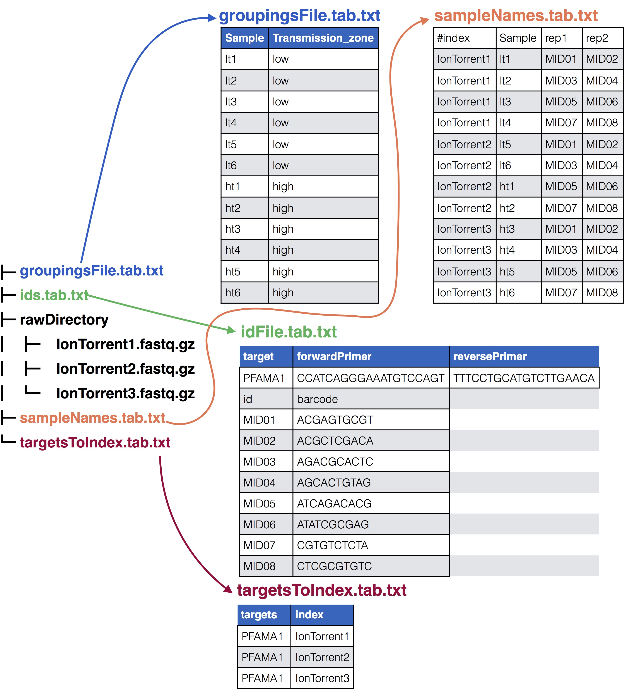
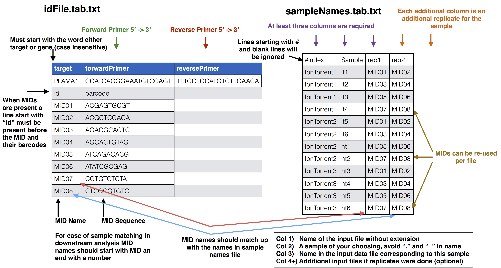
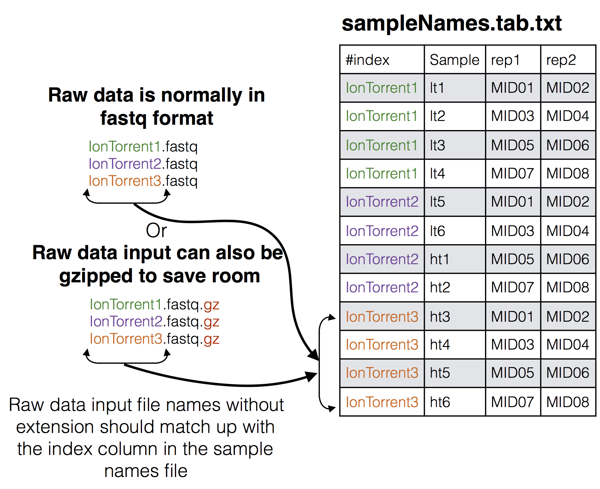
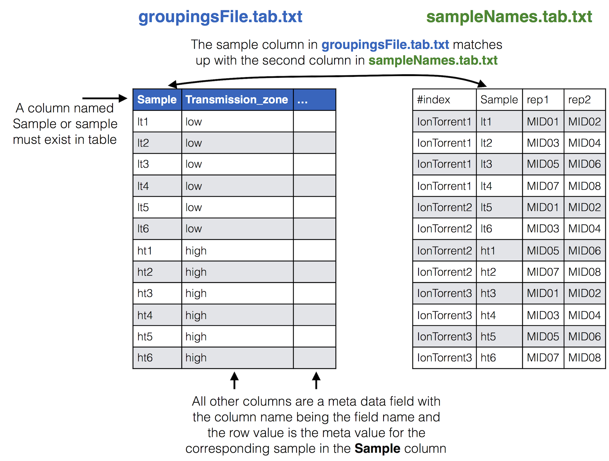
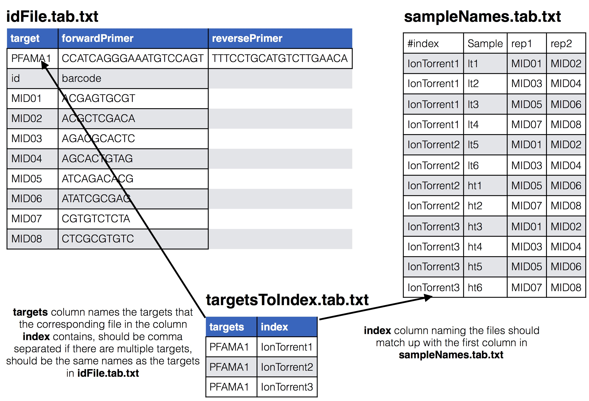

Multiplex SeekDeep Tutorial
Nicholas Hathaway
Installing SeekDeep
To install SeekDeep check out the install directions page
Explanation of Tutorial Data
This is a made up dataset of targeted sequencing from the apical membrane antigen 1 (AMA1) protein from Plasmodium Falciparum. The dataset consists of 12 patients and PCR replicates for each one so a total 24 barcoded samples. These samples were pooled into three separate pools reusing the same barcodes and running on three different Ion Torrent runs. The data is split into two theoretical populations, patients from a high malarial transmission zone where malarial population should dense and there should be high complexity of infection (COI) compared to patients from a low malarial transmission zone.
Downloading Tutorial Data
back to top
Download the tutorial data materials using the below commands. This contains the example Ion Torrent data and the files created for this dataset.
It also contains two scripts that contain all the below commands required to run the whole tutorial, it assumes SeekDeep has been compiled and is in your path (export PATH=/home/user/SeekDeep/bin/:$PATH)
Files created to run Pipeline
back to top
The Multiplex_IT_Tutorial_Materials directory contains several files that were created in order to run the SeekDeep pipeline and which are normally created each time a new dataset is sent through the pipeline.
- pfama1_ids.tab.txt: This file supplies the forward and reverse primer along with the MIDs and their barcodes used in the experiment, see the SeekDeep extractor usage page for details on how this file should be formatted
- sampleNames.tab.txt: This file supplies how the samples in the experiment are organized across the different sequencing files and what MIDs were used for the samples including all MIDs if there are PCR replicates see SeekDeep makeSampleDirectories usage page for details on how this file is formatted. In this tutorial there are 24 samples for 12 patients spread across the three sequencing files.
- targetsToIndex.tab.txt: This is a file with two columns that lists what files contain which targets from the id file. One column is
indexand the other istargets, the names of the columns is important and must be these two. Theindexcolumn has the name of the input files. Thetargetscolumn has comma separated values indicating which targets from the id file are in that file. In this tutorial there is only one target, PFAMA1.
- groupingsFile.tab.txt: This file is useful for splitting up the final population clustering results into different groups if they are available. See SeekDeep processClusters usage page for how this file should be set up. In this tutorial there is only one grouping, high vs low transmission zone so there is only one additional column to the sample column.
Setting up main analysis folder
back to top
Though all the tools of SeekDeep can be ran on it’s own, the tool SeekDeep setupTarAmpAnalysis can be used to set up the analysis and create all the commands with default settings.
Running SeekDeep setupTarAmpAnalysis
back to top
To run SeekDeep setupTarAmpAnalysis at most two extra files have to be created to describe your input data.
An id file (here pfama1_ids.tab.txt) that describes the primers and MIDs, if still present, that were used in the experiment and a samples names file that indicates what samples are in which input files and if these samples have multiple replicates or only 1 run.
There are two ways this sample file can organized, one is by targets where each input file is already either de-multiplex or was only 1 sample to begin with, or, as in the case of this tutorial it can be organized by input file where MIDs are still present. When MIDs are still present 1 additional file is needed, targetToIndex.tab.txt, which is a file describing which targets are in the input files.
You can also supply a meta data file that aids in organizing data downstream.
See below for a visual depiction of how these files are set up.
The input files
All the input files for tutorial
See below to see how they relate

Samples Names file to id file

Samples Names file to raw data input

Samples Names file to groupings meta data file
If you have meta data you would like to associate with your samples you can give a file adding the info. This info will be given with the final results from the SeekDeep pipeline to make downstream analysis easier by having it already in the tables. SeekDeep will also organize data separated out by meta data to ease viewing of the data by group. See the below diagram as how this meta data should be matched up with the previous files described in this section. The name of the group metadata file is given to the --groupMeta argument.

Target Names in input file to sample names and id files
To indicate which targets are in which input files (some set up have different set of targets in each input file) you can supply a targets to index file to do so, see below for how this relates to the id and sample names file. The name of this file is given to the --targetsToIndex flag.

Tutorial example data
The tutorial data is a made up experiment where an investigation is being done for investigating parasite diversity in 12 patients from two different regions, 6 from 1 region and the other 6 from a second region. Meta data is provided for each patient so results per region can be viewed separately.
A theoretical display of the regions for the experiment explained above.

Running Tutorial Data
Required options
- --samples - The file with samples names and raw data file names as explained above
- --outDir - An output directory where analysis will be set up
- --inputDir - The input raw data directory
- --idFile - The id file explained above
- --byIndex - Indicates that the
--samplesfile’s first column is file names and not by target
- --targetsToIndex - A file that has what targets are in what files from the
--samplesfile, (if all targets are present in all files then this doesn’t have to be supplied)
Optional arguments
- --technology - This sets the technology to indicate what the raw data is, this can be 454, Illumina(default), or IonTorrent.
- --inputFilePat - This is a regex pattern to match files in the raw data input directory to use in the analysis, when the
--technologyis set to 454 or ion torrent this defaults to".*.fastq"which would be all files ending with fastq, since in this case the input is gzipped files it is being set here to".*.fastq.gz"which will automatically be unzipped.
- --groupMeta - A file with meta data to associate with the input samples, see above to see how this file should be associated with the other input files
- --numThreads - The number of CPUs to be utilized to speed up analysis
Passing on additional arguments to the default arguments of the 3 main sub-commands
Default scripts are created for each of the downstream analysis commands and additional arguments can be passed onto these scripts via the following three commands.
* --extraExtractorCmds - Any extra commands to append to the default ones for the extractor step, should be given in quotes e.g. --extraExtractorCmds="--checkRevComplementForMids --qualWindow 50,5,18" * --extraQlusterCmds - Any extra commands to append to the default ones for the qluster step, should be given in quotes
* --extraProcessClusterCmds - Any extra commands to append to the default ones for the processClusters step, should be given in quotes
This will extract the raw data from the input directory and unzip if necessary. Also id files will also be copied into the directory as well. Also default scripts will be created that will run the rest of the analysis, with defaults for the technology given to --technology, all of which can be ran by the file, runAnalysis.sh in the output directory or one at a time.
./runAnalysis.sh
#!/usr/bin/env bash
##run all parts of the pipeline
numThreads=1
if [[ $# -eq 1 ]]; then
numThreads=$1
fi
SeekDeep runMultipleCommands --cmdFile extractorCmds.txt --numThreads $numThreads --raw
SeekDeep runMultipleCommands --cmdFile qlusterCmds.txt --numThreads $numThreads --raw
SeekDeep runMultipleCommands --cmdFile processClusterCmds.txt --numThreads $numThreads --raw
SeekDeep runMultipleCommands --cmdFile genConfigCmds.txt --numThreads $numThreads --rawThe command SeekDeep runMultipleCommands is an utility in SeekDeep that allows the running of multiple commands and gives an output file in json for how each command executed. See the usage pages for each command to see an explanation of the flags used in the analysis.
The files extractorCmds.txt, qlusterCmds.txt, processClusterCmds.txt, and genConfigCmds.txt contain commandline commands on each line to run the analysis. The SeekDeep runMultipleCommands is command in SeekDeep that can take in such a file and run them in parallel speeding up analysis.
See below to see how these command files match up to the pipeline.
And then to start the server to explore the results interactively run the file startServerCmd.sh after running the above command files. ./startServerCmd.sh
#!/usr/bin/env bash
# Will automatically run the server in the background and with nohup so it will keep running
if [[ $# -ne 2 ]] && [[ $# -ne 0 ]]; then
echo "Illegal number of parameters, needs either 0 or 2 argument, if 2 args 1) port number to server on 2) the name to serve on"
echo "Examples"
echo "./startServerCmd.sh"
echo "./startServerCmd.sh 9882 pcv2"
exit
fi
if [[ $# -eq 2 ]]; then
nohup SeekDeep popClusteringViewer --verbose --configDir $(pwd)/serverConfigs --port $1 --name $2 &
else
nohup SeekDeep popClusteringViewer --verbose --configDir $(pwd)/serverConfigs &
fiCheck out http://baileylab.umassmed.edu/SeekDeepExample1 to see an example of the server hosting of the tutorial data by SeekDeep popClusteringViewer.